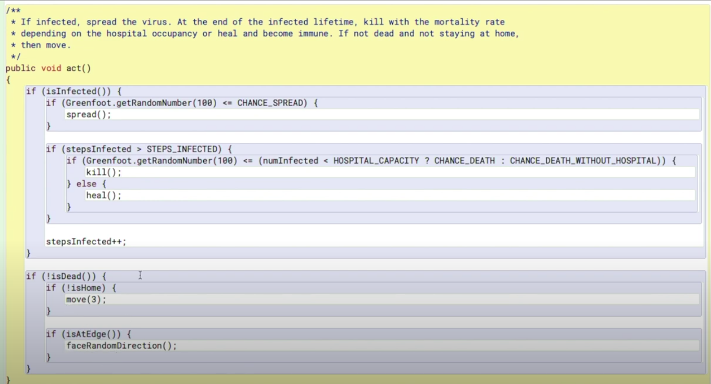
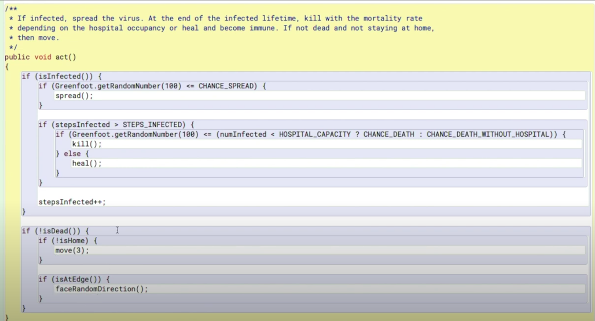

CHATBOT PROJECT
Fun Facts Chatbot
April 2021, AP Computer Science Applications
The goal of this project was to create a working chatbot that would ask questions and give prompts of its own but also respond to user input as accurately as possible. Due to the time restrictions, my team was unable to implement a full natural language processing library into the chatbot, which meant we mostly hard coded the responses it gives. Nevertheless, the bot still came out well, mostly giving reasonable responses. The most difficult part of the project was considering all the common cases and writing a method to address them since we hard coded the responses. It would certainly be interesting to redo the project but use an actual NLP library this time and see how much better it would be.
Link to projectGREENFOOT SIMULATION PROJECT
Covid Simulator
August 2020, AP Computer Science Applications
The goal of this project was to extend a simple simulation to incorporate more elements into it. The language used was Java using an IDE called Greenfoot. Even though we had many options, my group decided to improve the contagion simulation we already had rather than come up with a brand new idea. There were plenty of great ideas to implement, so we felt no need to complicate the problem. The only real challenges we encountered were using Greenfoot and Java. Greenfoot was new to us, and even though both of us knew Java, we weren't completely confortable with it. To ensure that we finished on time, we kept the ideas simple and easy to incorporate, yet they were still original and added a significant amount to the original simulation. It was overall a quick and enjoyable project that helped me fortify my knowledge of Java and get quite practical experience of altering already existing things to improve them.
Link to project 

EDUCATIONAL GAME PROJECT
Particle Project
November 2020 - December 2020, AP Computer Science Applications
The goal of this project was to use Java in Greenfoot to develop a game that would be educational in any chosen aspect. Influenced by our current classes, my team decided to do a chemistry-related game that would involve particles of different elements and demonstrating the reactions that can happen between them. One challenge we faced was overcomplicating the project. Looking back at it after seeing the projects others made, it was unnecessary for us to pick an idea that was so complicated and lengthy. On the other hand, I do believe that we did an incredible job in creating our idea, so even though it was unnecessary we still learned a lot. This project also made me realize how important teamwork (or rather lack of it) can influence a project. Some people barely contributed, which meant that those who did had to do way more work than they intended to, making the project much more stressful than we initially thought it would be. This project was one of the many in the year 2020 that made me change my work habits when in a team to enforce stricter rules and deadlines to make sure that such incidents don't happen again, because it was certainly not a pleasant experience.
Link to projectTEXT ADVENTURE PROJECT
Catacombs of the Mad Programmer
January 9, 2019 - January 16, 2019, Computer Science Principles
The goal of the project was to create a game using python that was completely text based. Some challenges that I overcame were keeping the text concise and working with the "pathing" of the game. Since we had many different functions for each room, and many different outcomes, it was important to keep the code organized to ensure that we do not get lost and every single room works as intended. We also decided to have one interesting choice that we did out of pure curiosity. At one point in the game the player pick themselves a weapon. To ensure that this process was organized and easy to use, we used classes. This was a new concept to me and my partner so its use was risky and yet informational. At the end, we ended up learning a lot and having a sucessful and working game. A major cause for our sucess was our teamwork. We understood each others' ideas and complimented our weaknesses. If I worked alone the project would be much less refined and interesting to play. Yet, there are still things that could be improved if we had more time. For example, the text is boring and stuck together, which makes it harder to read and the game overall less enjoyable.
Link to projectIMAGE MANIPULATION PROJECT
Candle Cakes Editing
February 25, 2019 - March 22, 2019, Computer Science Principles
This project is unique in its own way. This is the only project, so far, that I am unsatisfied with the final outcome of. The objective was to obtain images from a company that need to be altered, of course, the company didn't actually send them. Then, we had to alter those images to satisfy customer needs, which in this project were to make the product more noticable and make people want to purchase it. In this project, I ended up doing most of the work. I made almost all of the code for the project while my partner focused on searching for designs to use. One of the main issues with the project was the lack of previous knowledge on the topic. While we did get some activities to become familiar with the librarier and the concept, it was only enough to make a basic project. This is why our final images only got a logo and a border, without any complex changes. I am disappointed because I am used to attempting to go above the standards. During this project, I felt helpless. Nevertheless, we did complete the necessary basics for the project so rubric wise, it was sucessful. Yet by my standards, I still feel like we could have done much better.
Link to projectSOLAR HYDROGEN VEHICLE PROJECT
Tesla Motors Solar Tricycle
October 31, 2019 - November 18, 2019, Honors Principles of Engineering
The goal of the project was to create a small scale vehicle that runs only on solar or hydrogen energy. This prototype would be used to give a recommendation to Tesla Motors to create a vehicle that would use these inexhaustible and renewable sources, which pollutes the air less and is cheaper to use. My job was to create the body of the vehicle, and I was the most responsible for making a final decision in regards to which energy source we decided to use using the data we have collected from our experiments and the general pros and cons of each source. An issue we had was the unorthodox shape of both the solar panels and hydrogen cells, which made it challenging to attach them to the frame, but we ended up figuring out an optimal layout that ensures that the cells are secure using bolts. An interesting design decision we made was making the vehicle use 3 wheels instead of the standard 3, because we felt like the 4th wheel was unnecessary and would just consume extra power without adding much stability or speed. This project was new for all of us, since we had little to no first hand experience in utilizing breadboards, solar panels and hydrogen cells. But because of our teamwork, we were able to work efficiently and ended up making a vehicle that had a significantly superior speed to many other designs, despite the challenges we faced.
Link to projectRENEWABLE INSULATION PROJECT
S.O.A.K Insulation
February 5, 2020 - February 19, 2020, Honors Principles of Engineering
The goal of this project was to make an insulator that was less than 2 inches thick that was comprised of only renewable materials. The two main things we focused on as a team were keeping the insulator environmentally friendly, but also as cheap as possible. My job was to brainstorm materials, help put the insulation together, but most importantly collected and interpret the data we collected. The data in this project was collected by putting two temperature sensors next to a source of heat, but one of the sensors was directly touching the heat source, while the other was on top of the insulator that was directly touching the source, which allowed us to see the impact of the insulation and how well it can trap heat. A conclusion we came to when brainstorming was that materials like cotton were great insulators because of their ability to trap air, thus stopping a portion of the heat from moving through. An issue we had was that after I interpreted our first set of data, our first attempt did not go as well as we thought it would. This put us in a tough place since we were already low on time. We decided to do a second design despite the project only being planned for one. The second design was significantly better than the initial and we still ended up doing all the required work for the project in time. This project was valuable not only because of the new topic of heat conduction that we were unfamiliar with, but also taught a lesson in time management and improving on mistakes due to the adjustment we made by creating a second design.
Link to project